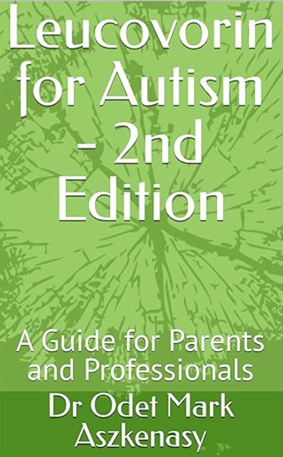

Zak’s Blood Test
Join Zak as he discovers that getting his blood drawn isn’t nearly as scary as he imagined — with tips for parents and carers.
Children’s stories for medical procedures, guides for parents and professionals, and Moira’s radiology title. Links go to Amazon UK.
All About My Health — short stories that prepare children for common procedures.
Join Zak as he discovers that getting his blood drawn isn’t nearly as scary as he imagined — with tips for parents and carers.

Follow Zak’s hospital operation journey — meet the people who take care of him and see how he gets back to feeling his best.
A book for children who are having an MRI brain scan. Follow Zak through an awake scan and meet radiographer Aisha.
Clinic English for families and clinicians — what is known, what is uncertain.

A guide for parents and professionals on autism genetics, NHS whole-genome sequencing, interpreting results (including VUS), and what testing can and cannot tell families.

Second edition on folate transport, cerebral folate deficiency, folate-receptor autoantibodies, the retracted trial, and what remains uncertain. Not a treatment manual.
A clinic-English guide to ADHD genetics for parents and professionals. Parallel to The Genetics of Autism.
All About Procedures in the Radiology Imaging Department.

Everything you need to know about your tummy scan. A gentle, doctor-written story so children can feel prepared and confident before the hospital visit.